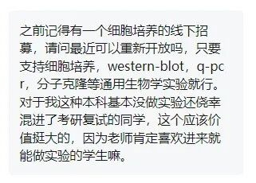
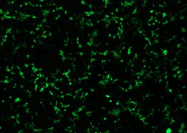
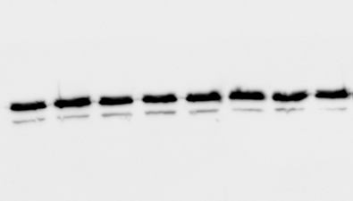
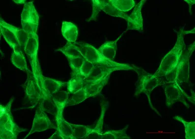

实验小白如何备战研究生复试
原文：https://mp.weixin.qq.com/s?__biz=MzAwMzIzOTk5OQ==&mid=2247527909&idx=1&sn=86ea63018bef869c6159bb82766e59e9&chksm=9b3c14b5ac4b9da30d933adde413a7846c7b0f338c90fd384edd10fbaad170dbbbc44535ad4c#rd 合集：实验基地

想你所想



看到后台的小伙伴留言，希望能够在考研复试前补一补实验基础。看来我们此前的实验计划还是有用武之地的，许多高校都在硕士研究生入学考试中设置了实验实操项目。Biomamba实验基地此前已经落地，(往期实验活动可见：实验基地)，目前我们可以提供基础 实验技能培训班（套餐），内容丰富，堪比“小学期“！为什么你需要这门课？
告别“听不懂术语”的尴尬：师兄用大白话拆解实验逻辑，小白也能听懂！
避开90%的常见坑：手把手教你处理细胞污染、转染效率低、抗体假阳性等问题！
直接对标文章标准：从构建载体到完成表型验证，离发paper更近一步！
| 套餐内容 ：技能模块**** | 实操内容**** | 对课题的帮助**** |
|---|---|---|
| 细胞培养 | 细胞复苏/传代/冻存技巧 | 学会养细胞，是你科研训练的第一步 |
| 载体构建 | 基因knockdown载体设计 | 定制你的“基因开关”，精准调控目标基因 |
| 质粒转染 | PEI/脂质体转染 | 把基因“快递”送到细胞内，开启基因表达 |
| Western blot | 蛋白提取/电泳/抗体验证 | 捕捉蛋白质的“指纹”，验证基因表达真实效果 |
| 免疫荧光 | 细胞固定/封片/信号可视化 | 直观看到蛋白在细胞里的“藏身之处” |
| RT-qPCR | RNA提取/逆转录/定量分析 | 精确测量基因表达 |
套餐价格 ：3800￥ /人
套餐时限 ：6个月(少年班都没这有性价比)
培训形式 ：灵活 开班与固定 开班，每次课程持续3天
灵活开班 ：基地根据实验项目灵活提前发布实验信息，凡有时间的学员即可参加学习。
固定开班 ：基地根据需求，每隔2-3周，利用周六日时间开展学习；根据学员需求，利用较长的假期开展系统培训。
按需开班：根据报名人数，每完成3位学员报名即开班。周边学员也可灵活参加，机动学习。
报名方式：编辑姓名+单位+联系方式+邮箱发送至客服小助手完成报名，线上缴费后等待开班具体通知，按时参加培训
报名方式：
编辑姓名+单位+联系方式+邮箱发送至客服完成报名，线上缴费后等待开班具体通知，按时参加培训
我们的宗旨是让每个学员真正掌握实验技能，而非一次性 的教学，最终实现基地与学员共同成长。
报名联系方式(已有生信基地联系方式的同学无需重复添加) ：

教学成果展示
GFP质粒转染：

Western Blot显影：

免疫荧光染色：
RT-qPCR结果：
实验基地
长期以来Biomamba都在自己的媒体矩阵中分享生信分析技能。生命科学毕竟是物质的科学，脱离了实验 总是玩不转的，大家的分析结果也需要去实验验证。一方面自己想在不同的领域里开疆扩土，追寻些新的可能；另一方面也想为大家的科研生涯全方面保驾护航，未来给大家提供新的服务、交流交流实验技能。所以，Biomamba联合浙江大学博士团队 组建了一个自己的实验室(Biomamba生信基地终于有基地 啦！)，base上海张江。目前还是百业待兴，大家有什么想法可以填写问卷 跟咱反馈反馈：问卷链接，文末阅读原文可直达：https://www.wjx.cn/vm/tpYsP8D.aspx# 问卷二维码： 更多想法也可以直接添加我们的客服微信[Biomamba_yunying]聊聊，我们也有专门的实验基地交流群。
实验室环境：
更多想法也可以直接添加我们的客服微信[Biomamba_yunying]聊聊，我们也有专门的实验基地交流群。
实验室环境：


对外开放~
诚然，公益培训也不是长久之计。目前实验室的固定开支 大概在四位数/天(不包含人员开支)，在为大家解决困难的同时，我们也需要考虑到存续 的问题。此前的实验培训中，有同学希望把自己课题组实验放在Biomamba实验基地中完成，由我们的老师指导或协助完成过程。我们当然愿意伸出援手。为保证实验质量，我们将限制实验项目/进驻人员的数量。以下是目前实验室可以进行实验列表。需要说明的是，实验室只协助完成合规实验 ，并客观呈现结果(真实验、真科研)且没有论文工厂类的服务！一定要获得阳性结果的同学请不要浪费彼此的时间！ 项目| 价格(详细数字添加下方微信商议) ---|--- 基因敲低验证| 1xxxx 基因过表达| 8xxx CCK8细胞增殖实验| 1xxx 细胞划痕实验| 1xxx 细胞周期| 2xxx 细胞凋亡| 2xxx 细胞侵袭| 2xxx 细胞迁移| 1xxx 单克隆形成实验| 8xx CO-IP| 3xxx 核/质 WB| 8xx WB| 6xx RT-qPCR| 1xx 免疫荧光染色| 1xxx 串联亲和纯化| 5xxx 其他分子细胞实验| 另议
详情可咨询文末微信

如何联系我们

 公众号后台消息回复不便，这里给大家留一下领取资料及免费服务器(免费两周学习版上架啦~)的微信号 ，方便各位随时交流（别问在么，添加时直接说来意）。呼声很高的交流群 也建好了，欢迎大家入群讨论：
公众号后台消息回复不便，这里给大家留一下领取资料及免费服务器(免费两周学习版上架啦~)的微信号 ，方便各位随时交流（别问在么，添加时直接说来意）。呼声很高的交流群 也建好了，欢迎大家入群讨论：
大家可以阅读完这几篇之后添加给生信入门初学者的小贴士 如何搜索公众号过往发布内容
已有生信基地联系方式的同学无需重复添加
 您点的每个赞和在看，我都认真当成了喜欢
您点的每个赞和在看，我都认真当成了喜欢